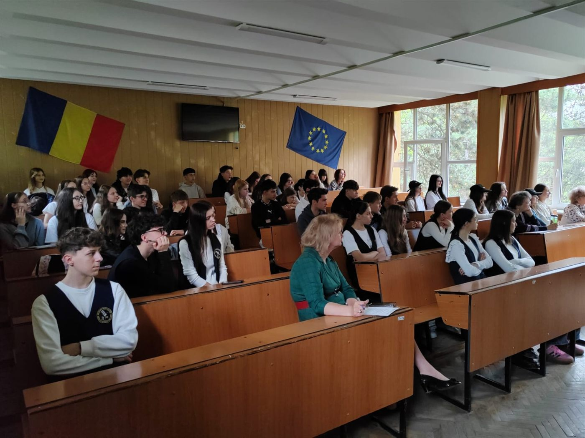
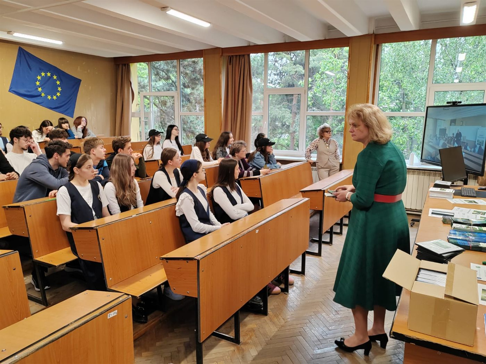
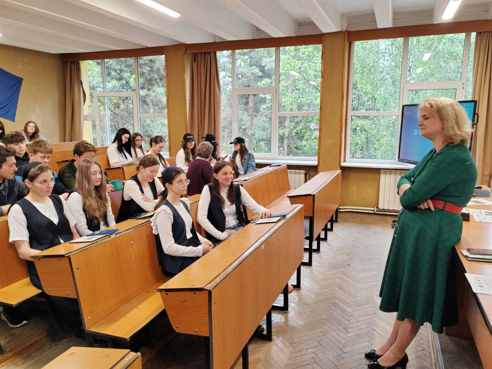
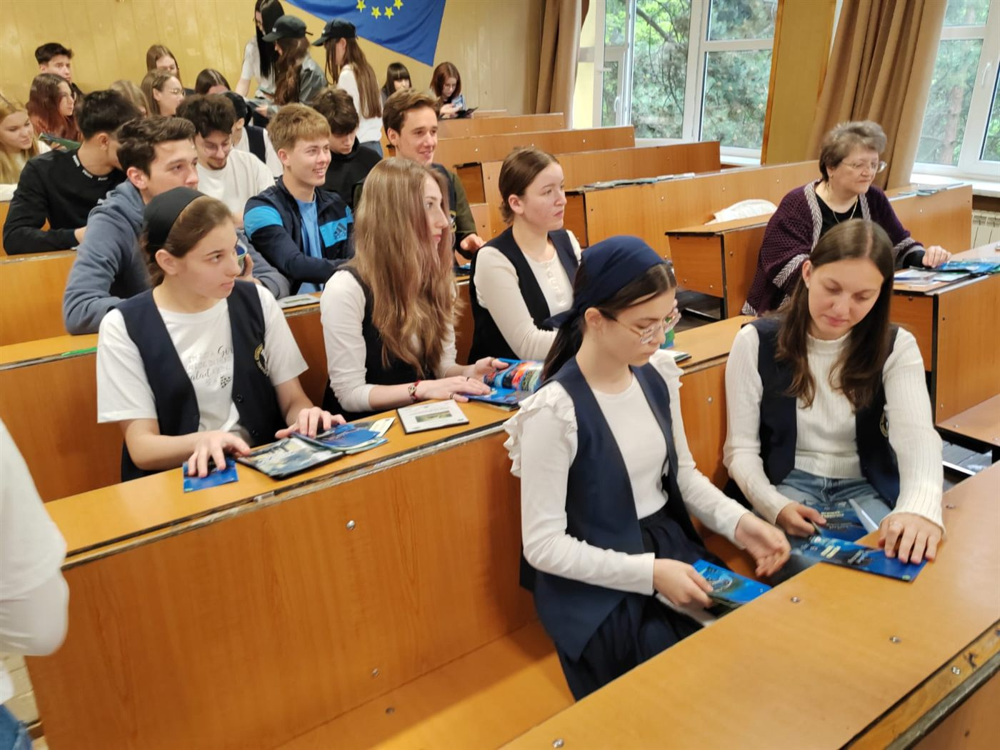
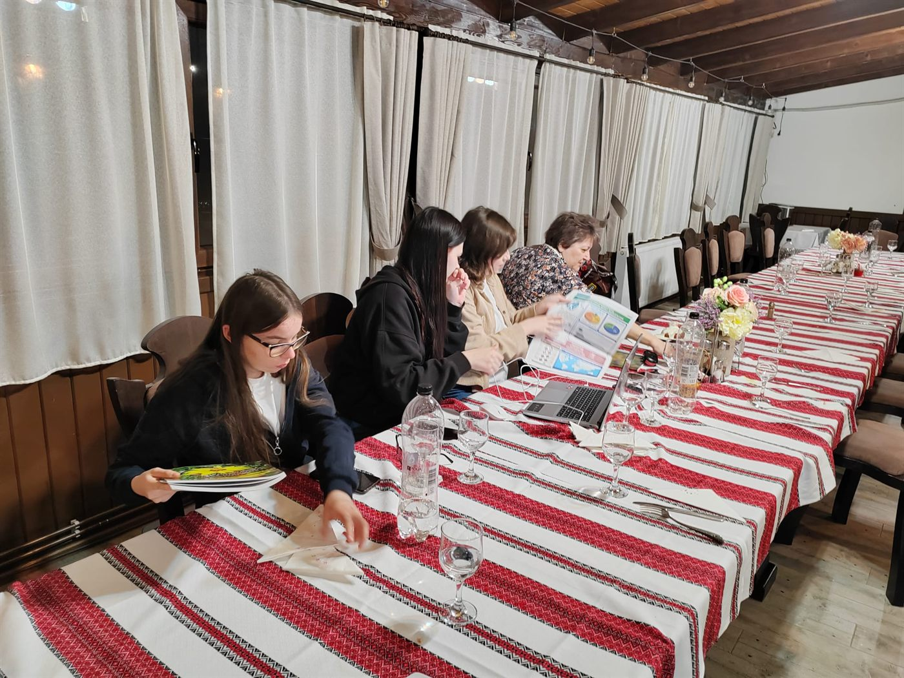
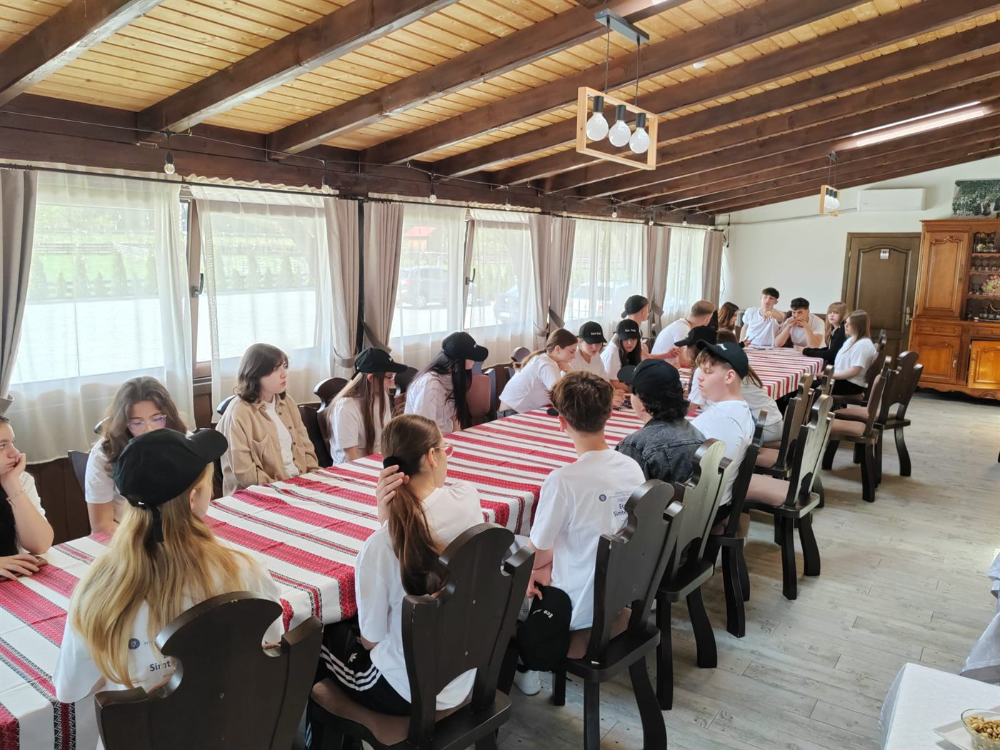
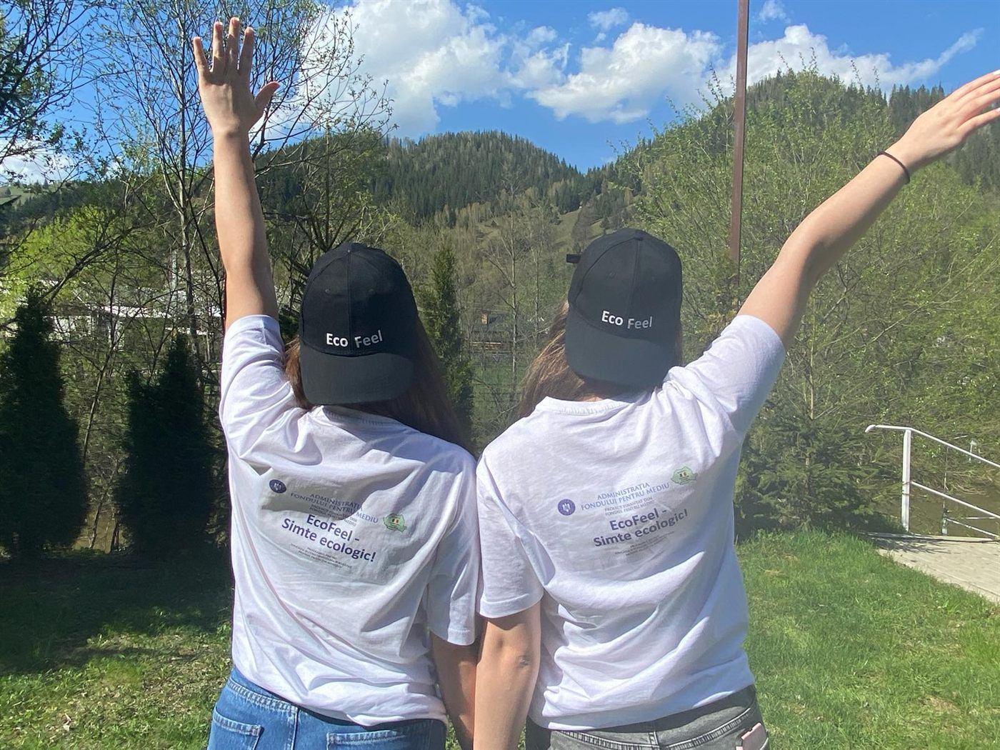
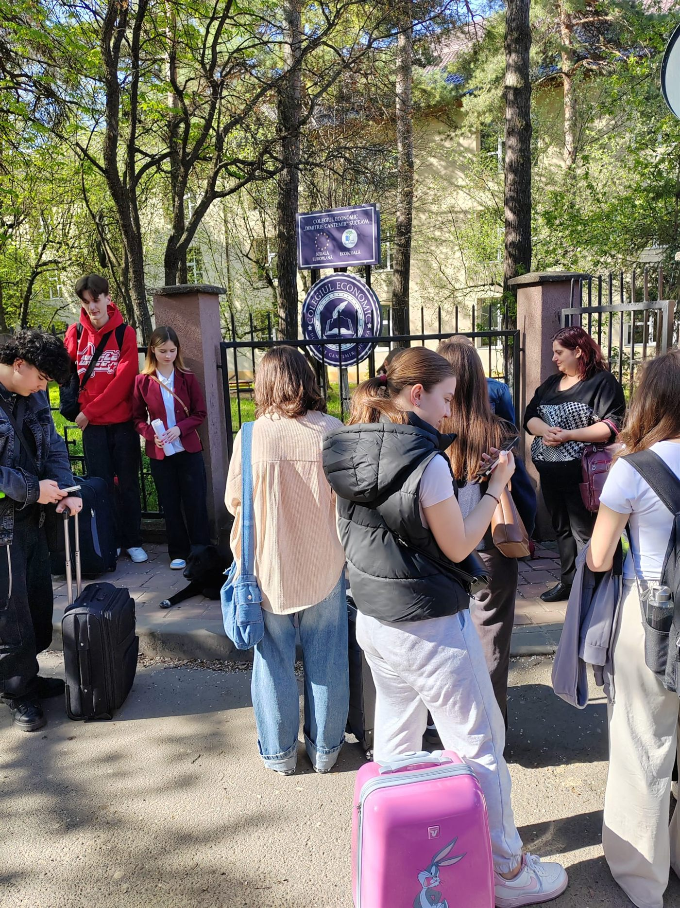

Eco Feel – Simte ecologic!
Un an de educație pentru mediu cu peste 500 de elevi de liceu din Suceava: sesiuni de instruire pe 16 problematici de mediu, ateliere în care elevii au realizat ei înșiși materiale de informare, o tabără tematică, o campanie de diseminare în oraș și un club ecologic care continuă inițiativa.
Obiectivul general
Creșterea gradului de informare și conștientizare a elevilor din județul Suceava, în vederea creării unei atitudini pro-active față de mediul înconjurător, prin implicarea acestora în activități practice și educative.
Obiective specifice
- Conștientizarea problemelor de mediu în rândul a minimum 501 elevi cu vârsta între 14 și 18 ani, prin realizarea unei platforme de inițiativă comună privind aspecte legate de protecția mediului, facilitarea schimbului de opinii în cadrul activităților proiectului, prin intermediul unui site web și prin implicarea în constituirea unui club ecologic;
- Creșterea gradului de implicare a elevilor în diseminarea și rezolvarea aspectelor de mediu, prin conceperea, realizarea și distribuția de materiale foto, audio-video și tipărite cu conținut educativ privind protecția mediului, de către elevi, pentru elevi.
Activitățile proiectului
Sesiuni de instruire pe teme de mediu
Între septembrie 2024 și ianuarie 2025, 501 elevi din clasele a IX-a – a XI-a au participat, în aula colegiului, la cinci sesiuni de informare și conștientizare de 90–120 de minute fiecare (20 septembrie, 18 octombrie, 7 noiembrie, 22 noiembrie și 6 decembrie 2024, câte 100 de elevi pe sesiune). Sesiunile au fost susținute de trei instructori, cadre didactice ale colegiului, cu fișe de activitate, imagini și proiecții, și au acoperit toate cele 16 problematici de mediu propuse de finanțator:
- poluarea aerului;
- poluarea apelor;
- tăierea ilegală a pădurilor;
- poluarea cauzată de deșeuri;
- circuitul de gestionare a deșeurilor;
- exploatarea necontrolată a resurselor pământului și epuizarea resurselor naturale;
- beneficiile utilizării resurselor regenerabile și importanța energiei verzi;
- protecția ariilor naturale protejate;
- agricultura intensivă și repercusiunile asupra mediului;
- industrializarea excesivă și repercusiunile asupra mediului;
- protecția biodiversității;
- schimbările climatice: dezastre naturale, eroziunea solului, inundații, secetă, încălzire globală;
- efectele gazelor cu efect de seră asupra mediului;
- stimularea utilizării transportului cu emisii scăzute;
- eficiența energetică a clădirilor;
- drepturile și obligațiile de mediu ale cetățenilor și ale instituțiilor publice locale.
Ateliere de diseminare: elevii devin autori
La finalul sesiunilor, 40 de elevi voluntari au fost selectați și împărțiți în grupe de 6–7. Între noiembrie 2024 și februarie 2025 au parcurs două etape: patru seminarii de diseminare (8 noiembrie, 27 noiembrie, 13 decembrie 2024 și 17 ianuarie 2025), cu documentare, dezbateri și acțiuni de igienizare în natură, apoi patru workshop-uri de producție (28 ianuarie, 7, 11 și 14 februarie 2025), în care au cules date, au redactat texte, au fotografiat, au filmat și au înregistrat audio cu echipamentele achiziționate prin proiect. Elevii au ales 12 dintre cele 16 teme și au produs pentru fiecare texte, eseuri, articole, fotografii și materialele de bază ale spoturilor.
Materiale de informare realizate „de elevi, pentru elevi”
- 12 modele de pliante color, câte unul pentru fiecare temă;
- o broșură color de 24 de pagini;
- 12 spoturi radio și 12 spoturi TV de informare, de 30 de secunde fiecare, difuzate pe un post de radio și un post de televiziune cu acoperire regională;
- un film documentar TV de 15 minute, cu imagini de la activități și mesajele elevilor;
- un DVD de promovare cu toate materialele;
- platforma online ecofeel.ro, unde au fost publicate materialele elevilor, fotografiile și spoturile.
Tabăra EcoFeel
În vacanța de Paște 2025, 30 de elevi și 3 instructori au petrecut tabăra tematică la Pojorâta, în inima Bucovinei: sesiuni de instruire, igienizarea zonei din preajma pensiunii, drumeție tematică pentru observarea florei și a faunei, vizită în aria protejată Ariniș de la Gura Humorului, vizită la o firmă de salubrizare și colectare selectivă din Ilișești, jocuri interactive pe teme de mediu, proiecții de filme și prezentări. Au fost abordate toate cele 16 teme ale proiectului.
Campanie de diseminare și Clubul EcoFeel
Elevii au distribuit materialele tipărite în trei acțiuni publice: în colegiu, în zona centrală a municipiului Suceava și în zona Universității „Ștefan cel Mare”. La finalul proiectului, cele trei organizații au semnat parteneriatul pentru Clubul EcoFeel, un club de inițiativă ecologică cu sediul la colegiu, deschis elevilor, profesorilor și tinerilor care vor să continue acțiunile de protecție a mediului.
Promovare
Două conferințe de presă în amfiteatrul colegiului (lansarea, la 13 septembrie 2024, și închiderea, la 14 mai 2025, cu prezentarea rezultatelor și vizionarea documentarului), două comunicate publicate în presa regională, două spoturi radio și două spoturi TV de promovare a proiectului și a rezultatelor, roll-up-uri, tricouri și șepci personalizate purtate de elevi la activități.
Rezultate în cifre
| Indicator | Propus | Realizat |
|---|---|---|
| Elevi implicați | minimum 501 | 526 |
| Sesiuni de instruire | minimum 4 | 5 |
| Problematici de mediu abordate | minimum 12 | 16 |
| Elevi în atelierele de diseminare | 40 | 40, în 4 seminarii și 4 workshop-uri |
| Pliante și broșură | 12 modele, 1 broșură | 12 modele, 1 broșură de 24 de pagini |
| Spoturi de informare radio / TV | 12 / 12 | 12 / 12 |
| Documentar TV / DVD | 1 / 1 | 1 (15 minute) / 1 |
| Tabără tematică | 30 de elevi, 3 instructori | 30 de elevi, 3 instructori |
| Acțiuni de diseminare în oraș | minimum 3 | 3 |
| Conferințe / comunicate de presă | 2 / 2 | 2 / 2 |
| Platformă online / club ecologic | 1 / 1 | ecofeel.ro / Clubul EcoFeel |
Rolul fundației
Fundația Umanitară „Adam-Mădălin” a coordonat sesiunile de instruire pentru elevi, atelierele de diseminare, realizarea materialelor de informare, tabăra EcoFeel, campania de diseminare și înființarea Clubului EcoFeel, alături de beneficiar și de colegiu.
Fotografii
















Video
Cele 12 spoturi TV tematice realizate cu elevii (YouTube)
- Poluarea aerului
- Poluarea apelor
- Tăierea ilegală a pădurilor
- Poluarea cauzată de deșeuri
- Circuitul deșeurilor
- Exploatarea necontrolată a resurselor
- Resurse regenerabile
- Protecția ariilor naturale protejate
- Agricultura intensivă
- Protecția biodiversității
- Schimbări climatice
- Efectul gazelor cu efect de seră